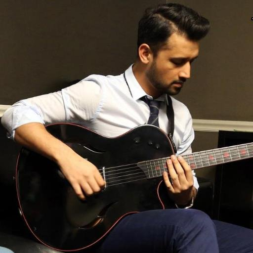

Muhammad Atif Aslam is a Pakistani singer and film actor. His movie debut was the 2011 social drama Bol. He has recorded numerous chart-topping songs, and is known for his vocal belting technique. Aslam is the youngest recipient of Tamgha-e-Imtiaz, a Pakistani civilian decoration.
Aslam was born into a Punjabi Muslim family in Wazirabad, Punjab, Pakistan. He began his education in kindergarten at Kimberley Hall School, Lahore. In 1991, he moved to Rawalpindi where he continued his studies in St. Paul's Cambridge School, Satellite Town, Rawalpindi. In 1995, Aslam returned to Lahore where he continued his studies in Divisional Public School. He attended Punjab Institute of Computer Science (PICS) to do his Bachelor's degree in Computer Science (BCs).[3][4] Aslam played cricket and got interested in music. Even though Aslam always admired Nusrat Fateh Ali Khan and Abida Parveen,[5] his first love was for cricket and he dreamed of representing his nation as a cricketer. He was a fast bowler and his passion for the sport saw him being selected for the national Under 19 cricket team trials. At one stage Aslam was training to represent his country in the U-19 World Cup.[citation needed] Spurred on by his friends, he began to sing in public during his days at PICS, where he met guitarist and talented young composer, Goher Mumtaz. After performing at their college and at various restaurants, they eventually formed a band named 'Jal' – an Urdu/Hindi word which means 'water'. Working together, the pair recorded the song "Aadat" with the help of Salman Albert, amongst other established and accomplished Pakistani musicians, and the music video for "Aadat" was shot in a warehouse in Karachi. Within a matter of weeks, "Aadat" became popular on a host of promotional Pakistani music websites and went viral online, making Aslam a household name. On the basis of the popularity of this song, Jal began their tour of Pakistan. However, while on tour, personal problems between Aslam and Mumtaz led to an unannounced and indefinite break, during which Aslam launched his solo career, while Mumtaz continued using the band name 'Jal'
His first international tour, performing in the US and Canada with Rhythm Dhol Bass and Annie Khalid. Aslam then made his solo debut concert in New Jersey in Summer Beats 2008 at Sovereign Bank Arena, which also featured Kailash Kher, Richa Sharma and Amanat Ali. After a sold out concert in New Jersey, Aslam returned with his band and special guests to Queens Colden Center, New York to perform on 2 July 2010.[8] Atif performing in Lahore, Pakistan Two years later, Aslam returned to the US. Collaborating with vocalist Shreya Ghoshal, their March 2010 tour originally had 10 shows announced in US and Canada. However, the response inspired the organizers to put shows in six more cities. The following month, Aslam made his debut in South America with a performance at Anthony Nesty Sports Hall, Suriname.[citation needed] He continued to tour the world with headline performances[9] at the Royal Albert Hall in London, alongside Jay Sean). He followed that with dates, across major concert venues in the UK in 2010. Aslam performed with Sunidhi Chauhan for the first time at Hershey Centre, Mississauga, followed by another show at Oracle Arena, San Francisco, Oakland,[10] in July 2011, during their USA and Canada tour. In September 2011, Aslam performed at New York. Aslam performing at O2 Arena On 22 April 2012, Aslam became the first Pakistani to perform in London's O2 Arena[11] a concert spectacular to promote love, peace and unity among India and Pakistan. Aslam performed for four hours. This was followed up by shows in Manchester[12] and Glasgow.[13] In 2012, he was invited for three concerts at the World Trade Centre in Dubai. This was followed by his debut concert in Bangkok at the Centara Convention Centre on 6 October 2012.[14] Aslam then returned to perform in ten major Pakistani cities during his Jazz Jazba Generation Tour.[15] On 2 November, he performed his first public concert in Malaysia. In December 2012, Aslam was named among top performers of Dubai for 2012 alongside Pitbull, Enrique Iglesias, Il Divo, Gotye, Evanescence and Swedish House Mafia. Aslam also is the first man from Asia, and the second artist after Bryan Adams, to be permitted to perform inside the Dashrath Rangasla National Football Stadium in Kathmandu, Nepal.[16][17] Aslam once again returned to Dubai for multiple concerts in 2013 at the world-famous Atlantis resort. In April 2013, Aslam performed for the first time at the LG Arena in Birmingham[18] following which he became the first artist from Asia to perform twice at London's O2 Arena. Also in concert at the O2 were Bollywood stars Shaan, Malaika Arora Khan & Bipasha Basu.[19] In November 2014, Aslam performed at the Leisure Valley grounds in Gurgaon alongside Arijit Singh in front of thousands.[20] In August 2015, Aslam performed at London's O2 Arena for the third time